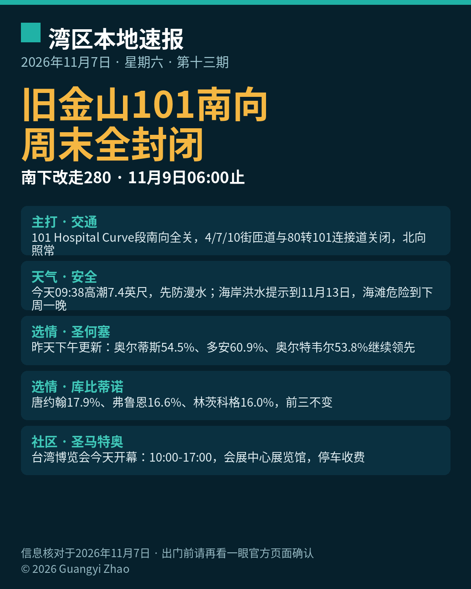

title: 旧金山101南向周末全封闭，南下改走280 date: 2026-11-07 series: baylocal author: Guangyi Zhao

《湾区本地速报》第十三期，2026年11月7日，星期六，五条本地新闻：
主打·交通：加州交通局（Caltrans）旧金山高速公路翻修工程迎来最后一场周末全封闭：US-101 Bayshore 高速 Hospital Curve 段南向全部车道，自昨晚（11月6日）23 点起封闭至下周一（11月9日）早上 6 点，封闭路段在 17 街与 Cesar Chavez 之间，本周末完成最后两条南向车道的铺面。封闭期间 4 街、7 街、10 街上匝道关停，西行 80 号转北行 101 的连接道也关闭；北向车道照常通行。官方建议南下改走南向 280 高速，并预期会有延误；施工进度受天气影响，出门前请先看 Caltrans 页面确认。
天气与安全：国家气象局海岸洪水提示持续到 11月13日（周五）下午 4 点；今天（11月7日）上午 9 点 38 分旧金山潮位站高潮预计约 7.4 英尺、高出正常 1.6 英尺，湾岸低洼地带可能漫水最高约 1.6 英尺，明天上午高潮同为 7.4 英尺。海滩危险提示持续到下周一晚上，碎浪 12 到 16 英尺，别下水、别上礁石与防波堤。
选情更新·圣何塞：截至昨天下午（11月6日）5 点，圣何塞第五区现任 Peter Ortiz 54.5%（7415 票）领先 Nora Campos 45.2%（6152 票）；第七区现任 Bien Doan 60.9%（8173 票）领先 Van Le 38.9%（5222 票），Spotlight 称 Doan 有望成为十多年来首位在第七区连任的现任议员；第九区 Genny Altwer 53.8%（10907 票）领先 Gordon Chester 46.0%（9318 票）。全县投票率 36.9%，约 260900 张选票尚未处理，结果未经认证。
选情更新·库比蒂诺：三席暂居前三的仍是同一竞选组合：John Tang 17.9%（6098 票）、现任议员 J.R. Fruen 16.6%（5649 票）、规划委员 Seema Sharma Lindskog 16.0%（5448 票），前三名当选；同样为初步结果，待认证。
社区大事：台湾博览会（USA Taiwan Global Expo）今天与明天（11月7日至8日）在圣马特奥县会展中心展览馆举行，每日上午 10 点到下午 5 点，台湾美食、品牌、生活、健康、文化、旅游与科技产品集中展示，地址 1346 Saratoga Drive, San Mateo；门票经主办方渠道销售，会展中心停车收费。
来源：加州交通局 Caltrans（101翻修项目页） · 国家气象局海岸危险通告 · San José Spotlight（第七区） · San José Spotlight（库比蒂诺） · Sparknify 周末活动清单（台湾博览会）
数字证据说明：101 封闭通告与海岸洪水提示为 A 级（官方原文，核对日期 2026-11-07）；圣何塞与库比蒂诺选情、台湾博览会安排为 B 级（可靠媒体/主办方发布多源一致，选情为初步结果口径）。
《湾区本地速报》为《代码与诗篇》新闻矩阵第 8 档，每日早上更新。播报版（音频/视频）同日发布于 YouTube「Ezra Daily 每日速报」。© 2026 Guangyi Zhao